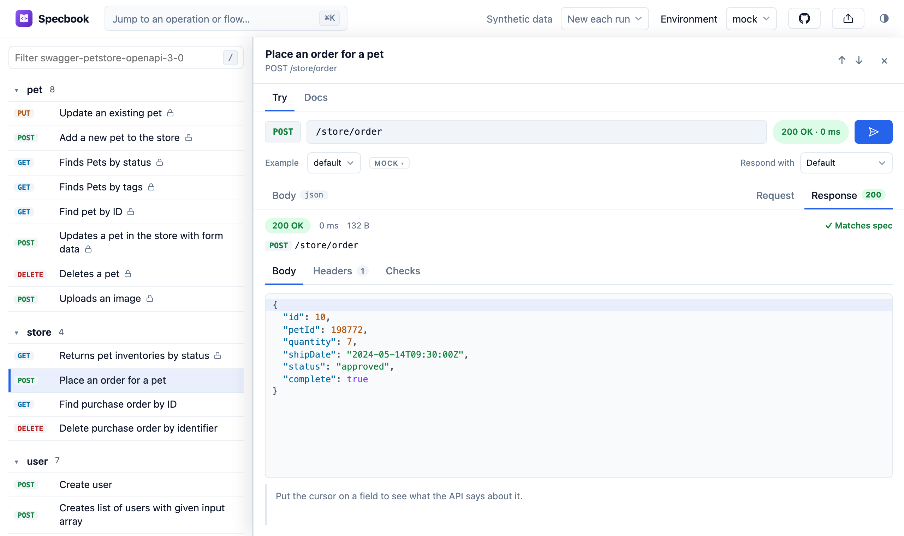
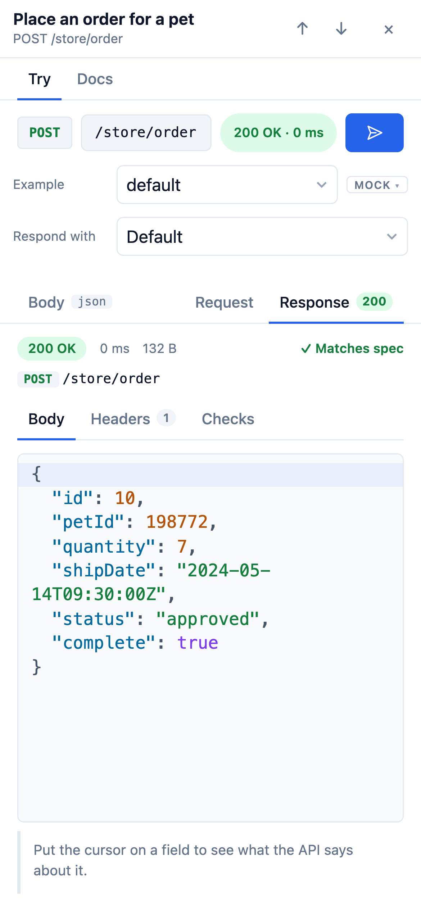

A Swagger UI alternative
Same spec. Way more swagger.
Paste a link to any OpenAPI or Swagger document and Specbook opens it as an explorer you can click through, send requests from, and share. Requests start on mock data, so there is something to try before you have set anything up. Nothing is uploaded.
Try one:


What you get
- Try it before there is a backend. Mock responses come from your spec and follow what you send: posted fields come back, filters shape the list.
- Reads well where people read docs. Phone, tablet, dark mode, and a link to any single operation.
- One script tag. Serve it from your docs route and it runs on your origin: no CORS to configure, and your visitors' cookies are sent.
Add an "Open in Specbook" button to your README
Paste the address of your OpenAPI file. Anyone who clicks the button gets your API open and runnable, with nothing to install.